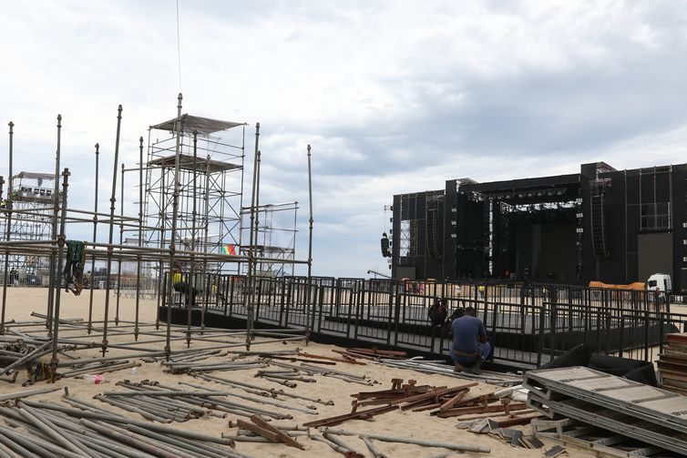

Milhares de turistas já aguardam com ansiedade a chegada do réveillon em Copacabana. Depois de dois anos sem shows na beira da praia, finalmente a festa contará com palcos onde se apresentarão artistas consagrados. Apesar do tempo nublado desta quinta-feira (29), o programa dos visitantes era passear pelo calçadão da orla e garantir fotos em frente ao palco principal.
“Viemos para ver o réveillon do Rio do Janeiro e principalmente o Zeca Pagodinho. É a primeira vez nossa aqui no Rio. Graças a Deus nós vamos poder contemplar essa loucura, essa felicidade”, disse Vanderlei Augusto, que veio de Porto Alegre, juntamente com a esposa, Vera Prates: “Esta cidade é maravilhosa mesmo. Não vejo a hora de ver os shows. Está ficando muito bonito o palco. Vai ser espetacular mesmo”, disse Vera, que é escritora.
O palco principal foi montado na areia, em frente ao hotel Copacabana Palace, de onde os artistas chegarão, através de uma passarela provisória especialmente construída sobre a Avenida Atlântica. Além de Zeca Pagodinho, está prevista a apresentação de Iza, Alexandre Pires e bateria da Grande Rio. Em outro palco, em frente à Rua Santa Clara, as atrações serão: Mart’nália, Bala Desejo, Gilsons, Preta Gil, bateria da Beija-Flor e DJs.

Alguns turistas destacavam o desejo de uma passagem de ano em alto astral, para apagar os momentos difíceis dos últimos anos, com crise econômica e covid-19. “A expectativa é boa, uma data especial, depois da covid. A gente espera que seja um ano de muitas bênçãos para todo mundo. Esperamos que seja um ano melhor”, disse o paulista Alan Alves de Lima, que veio ao Rio junto com o marido, Kleber Roberto Moreno. “Que seja um ano de muitas conquistas e vitórias, repleto de realizações, tudo o que a gente não conseguiu viver nessa pandemia, ficando dentro de casa, com muitas perdas. Foram anos difíceis e pesados, mas graças a Deus estamos aqui”, disse Kleber.
Enquanto os turistas se preocupavam unicamente em conhecer a praia e garantir boas fotos para as redes sociais, outros queriam mesmo era ganhar algum dinheiro, vendendo produtos aos visitantes, como Vander Amorim, que comercializa camisas de futebol. Em média, ele vende quatro camisas por dia, o que garante um lucro de R$ 80.